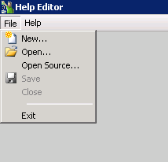
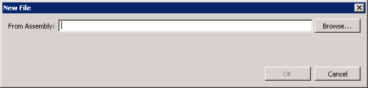

In this Article I'm going to explain how to create an accompanying Help file with added information to display to the User when they open and configure the component.
Table of Contents
- List
- Setup
- Simple Component
- Deploy
- Help File (this)
- Logging
- Inputs
- Inspecting other Components
- Creating Globals
- Creating Project Properties
- Working with SQL
- Working with a Web Service
These are located:
[Install Drive]:\Program Files\Symantec\Workflow\Designer\Help\
When creating a Component using the  Integration Project type when you Compile and close the Help Editor loads and allows you to make changes.
Integration Project type when you Compile and close the Help Editor loads and allows you to make changes.
If you have created a custom component this file won't exist.
The File name is usally the DLL name with the ".libconfig" file extension.
To create a new Help file for a custom dll open the Help Editor
[Install Drive]:\Program Files\Symantec\Workflow\Designer\bin\WorkflowHelpEditor.exe
Select File | New

Select Browse

Find the dll in the customlib folder

Now we have the Component to work with.
If we compare what data we have to what Attributes we provided in code:
[Serializable,
ComponentCategory("Protirus"),
ComponentImage("Protirus.Workflow.Protirus.png"),
ComponentName("Protirus Concat"),
ComponentDescription("This component joins two Strings."),
ComponentHelp("http://www.protirus.com/components/"),
ComponentUsage("Requires two strings."),
ComponentExample("String a = 'Hello' String b = 'World', this will return 'Hello World', if Add Space is True."),
ComponentPublisher("Protirus", "www.protirus.com")]
[PropertyPageOrder("General", "Configuration", "Settings")]

If you click on  Properties we can then add extra information and group them by tabs.
Properties we can then add extra information and group them by tabs.
Data annotations in code are now deprecated so the help file is the only way to add it and show in the Help file within Workflow.

As we see the Component Properties don't have any information and aren't grouped by tabs.
To add the Published add the Company name in the Assembly Info of the component in Visual Studio.

I annotate my variables in code, these can then be copied to help
[VariableType(typeof(string), false),
PropertyIndex(3),
DisplayName("String 1"),
Category("Configuration"),
ComponentDescription("The first String to be merged")]
You can create new Categories or groupings within a tab,

Give it a name

Drag the Properties into the Category, then add your information.

Save this file.
Reload your Workflow.

You may notice the Icon has changed back to the default.

Back to the Help file.
Click on the Component, then click  Icon
Icon
Click Add then search for your image, choose and click OK.

Now you might want Tabs aswell as grouping items in the General tab.

Drag the Category into the new tab

Now save and reload the WF.

If we click the Help ?

If we'd filled in the Help and Example etc they would show here too.